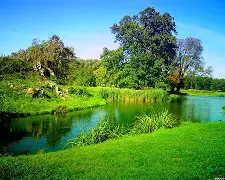
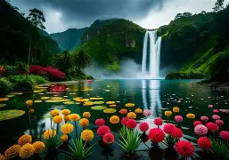
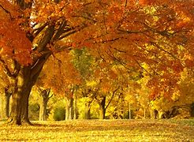

Nature is the essence of our planet.Nature is like a magical gift that surrounds us with beauty and life. From tall trees to colorful flowers, it fills our world with wonder and peace. The beauty of nature is reflected in its diverse landscapes and ecosystems, which offer serenity and balance.From the tranquil silence of a forest to the relentless power of the ocean — nature speaks to us in a language that transcends words, urging us to connect, respect, and protect the natural world.
“If you truly love nature, you will find beauty everywhere.” — Laura Ingalls Wilder
  Pakistan has an extraordinary and magnificent variety of landscapes. Nestled between the majestic Himalayas and the Arabian Sea, Pakistan boasts an extraordinary tapestry of natural wonders that leave visitors awestruck. From snow-capped peaks to lush valleys, from vibrant forests to serene lakes, the diverse landscapes of Pakistan offer a breathtaking glimpse into the beauty of nature. Snowcapped Himalayan peaks, rare brown bears, and otherworldly rock formations dazzle travelers to this stunning part of the world. From the precipitous peaks of the Karakoram range to the fertile Indus River plain, Pakistan is home to a diversity of stunning landscapes.